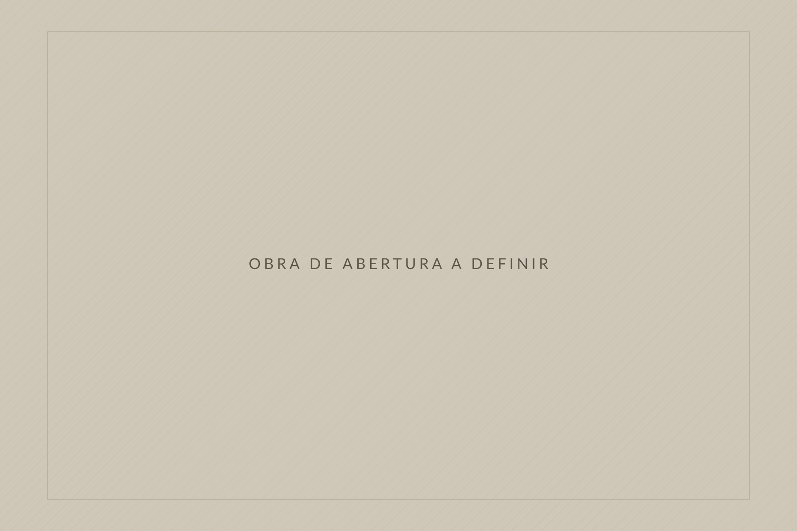
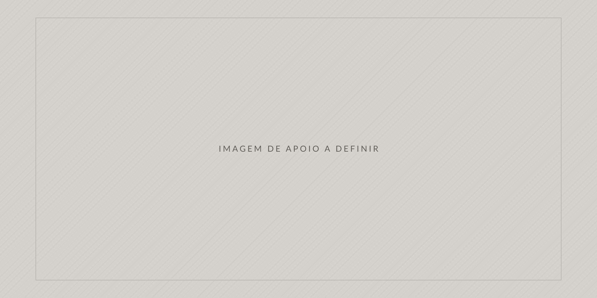
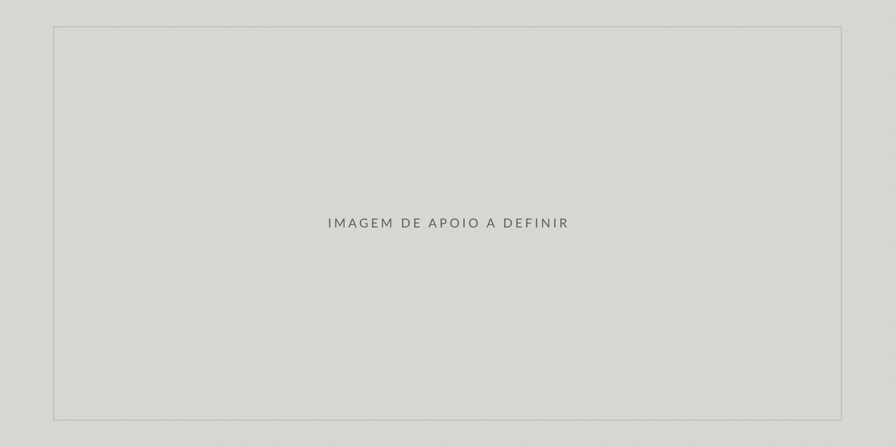

01
Arte
Como a amamentação foi representada: composição, gesto, símbolo, corpo, ambiente e contexto de produção.

Arte · História · Medicina
Um percurso pela história, pela medicina e pelas representações do cuidado
A amamentação acompanha a humanidade desde seus períodos mais antigos. Presente em diferentes culturas, crenças e formas de organização social, ela também atravessa a história da arte e da medicina. Este acervo reúne imagens e obras que permitem observar como o cuidado, a maternidade, o corpo e a alimentação infantil foram representados e compreendidos ao longo do tempo.
Introdução
A arte preserva mais do que estilos, técnicas e escolhas estéticas. Ela também registra práticas cotidianas, valores culturais, crenças, relações familiares e concepções de saúde. Ao observar representações da amamentação produzidas em diferentes períodos, é possível investigar como sociedades distintas compreenderam o corpo materno, a infância, o cuidado e a sobrevivência.
Este acervo propõe um diálogo entre arte, história e medicina. As obras são apresentadas não apenas por seu valor artístico, mas como pontos de partida para compreender transformações sociais, conhecimentos médicos, práticas de alimentação infantil e diferentes experiências da maternidade.
01
Como a amamentação foi representada: composição, gesto, símbolo, corpo, ambiente e contexto de produção.
02
O que essas representações revelam sobre a organização social, a família, o trabalho e o lugar das mulheres em cada época.
03
Como os conhecimentos sobre lactação, nutrição infantil e saúde materna se transformaram — e o que ainda não se sabia.
Chave de leitura
Cada obra é organizada em cinco camadas de informação. O percurso proposto vai da observação da imagem à reflexão sobre o presente, passando pelo contexto histórico e pela relação com a saúde.
Título, autoria, data, técnica, coleção e crédito da imagem — com indicação explícita do que ainda está por confirmar.
Descrição objetiva do que está representado: personagens, gestos, ambiente, composição e elementos visíveis.
Organização social, relações familiares, condições de vida e o lugar da maternidade no período de produção da obra.
Conhecimentos disponíveis sobre lactação e nutrição infantil, práticas de cuidado, mortalidade e saúde materna.
Uma pergunta aberta que conecta o período representado às questões da saúde e da sociedade contemporâneas.
Percurso por movimentos artísticos
O acervo está organizado por movimentos e estilos artísticos, apresentados em ordem cronológica: percorrer os estilos é também percorrer a história. A sequência não pretende sugerir progresso linear — ela permite observar permanências, rupturas e mudanças de significado, e perceber que a amamentação esteve presente, sob formas muito distintas, em todos esses momentos.
Linha do tempo
Marcos artísticos, sociais e médicos apresentados lado a lado. Cada registro indica seu estado de conferência: os marcos ainda não verificados em fonte documental aparecem sinalizados.
Nenhum marco corresponde à categoria selecionada.
Seleção
Percorra o acervo completo e utilize os filtros por período, tema e linguagem. Ver o acervo
Acervo
registros. Obras ainda sem identificação completa permanecem no acervo com seus campos assinalados como pendentes — a ausência de informação também é informação.
Nenhuma obra corresponde a esta combinação.
Tente outros termos de busca ou reduza o número de filtros aplicados.

Método
Imagens permitem observar aquilo que os documentos escritos raramente registram: o gesto, o ambiente doméstico, a posição dos corpos, quem está presente no cuidado e quem está ausente dele.
Uma obra de arte não é registro literal da realidade. Artistas idealizam, simplificam, obedecem a convenções e produzem sob encomenda. A imagem de uma mãe serena pode coexistir com uma sociedade em que a mortalidade infantil era altíssima.
Este acervo assinala explicitamente o que está confirmado, o que é provisório e o que permanece em pesquisa.
Reflexões
As perguntas abaixo acompanham obras específicas. São perguntas abertas, propostas como material de estudo e de discussão — não como respostas prontas.

Hoje
Conhecer o passado da amamentação não serve para prescrever comportamentos. Serve para perceber que as condições de amamentar — tempo, trabalho, apoio, informação, assistência e recursos — sempre foram socialmente distribuídas de forma desigual.
As recomendações atuais de saúde pública sobre aleitamento materno são resultado de décadas de pesquisa, regulação e organização de serviços. Elas convivem, no entanto, com realidades muito diversas: jornadas de trabalho, licença-maternidade insuficiente ou inexistente, ausência de apoio qualificado no pós-parto, condições clínicas específicas, desigualdade de acesso à informação e à assistência.
Reconhecer essa diversidade é parte do rigor histórico do projeto. A experiência da amamentação pode envolver vínculo e afeto, mas também dor, dificuldade, cansaço, pressão social e impossibilidade. Este acervo não avalia escolhas individuais nem atribui responsabilidade às mulheres pelas condições em que exercem o cuidado.
Sobre
Texto provisório Apresentação institucional a ser redigida pela coordenação do projeto. Este parágrafo existe para demonstrar o comportamento do layout e deve ser integralmente substituído.
Texto provisório Objetivos, justificativa e metodologia do acervo. Recomenda-se explicitar os critérios de seleção das obras, os procedimentos de verificação das informações e a política adotada para reprodução de imagens.
Referências e créditos
A normalização bibliográfica definitiva ainda não foi definida. A estrutura abaixo está preparada para receber o padrão que a instituição vier a adotar, com autoria, título, publicação, ano, URL e data de acesso.
As reproduções definitivas ainda não foram incorporadas. Os espaços reservados exibidos nesta versão são elementos gráficos neutros, produzidos para o projeto, e não representam nenhuma obra. Cada obra do acervo possui campo próprio de crédito, exibido em sua ficha.
A inclusão de reproduções depende de verificação de domínio público ou de autorização expressa dos detentores dos direitos e das instituições depositárias. Obras contemporâneas e do século XX exigem atenção específica a esse ponto.
Projeto de caráter educativo, sem fins comerciais, voltado ao estudo interdisciplinar das relações entre arte, história e saúde materno-infantil.